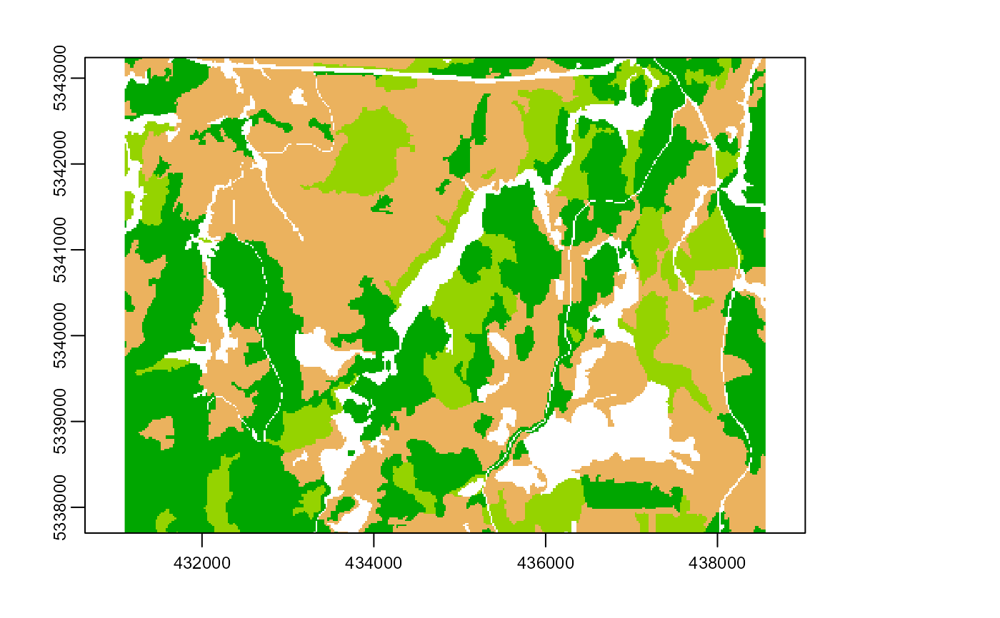
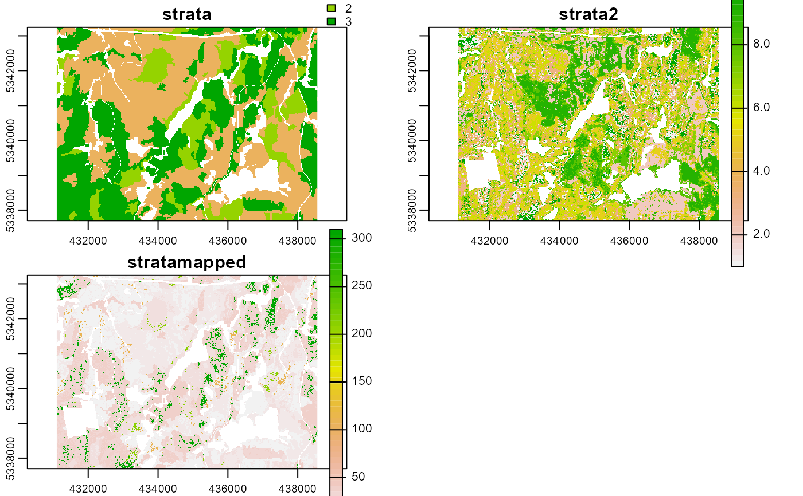
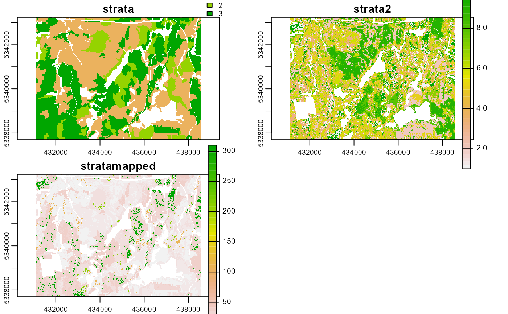

Map 2 stratified rasters
strat_map.RdMap stratified rasters to a combined stratification.
strat_map(
sraster,
sraster2,
stack = FALSE,
filename = NULL,
overwrite = FALSE,
plot = FALSE,
details = FALSE,
...
)Arguments
- sraster
spatRaster. Primary stratification raster.
- sraster2
spatRaster. Secondary stratification raster.
- stack
Logical. Default =
FALSE. IfTRUE, output raster will be 3 layers:strata, strata2, stratamapped.- filename
Character. Path to write stratified raster to disc.
- overwrite
Logical. Specify whether
filenameshould be overwritten on disc.- plot
Logical. Plots output strata raster and visualized strata with boundary dividers.
- details
Logical. If
FALSE(default) output is a mapped stratified spatRaster object. IfTRUEreturn a list where$outRasteris the mapped stratified raster, and$lookUpis the lookup table for the stratification.- ...
Additional arguments for writing files. See
writeRaster.
Value
A spatRaster object.
Mapping
The mapping algorithm will take the stratification from sraster and combine it with
overlying strata values in sraster2. This will result in a stratamapped attribute
where the values from both inputs are combined.
i.e.
If strata = 1 and strata2 = 1 then stratamapped = 11.
If strata = 2 and strata2 = 14 then stratamapped = 214.
See also
Other stratify functions:
strat_breaks(),
strat_kmeans(),
strat_osb(),
strat_pcomp(),
strat_poly()
Examples
#--- load input metrics raster ---#
raster <- system.file("extdata", "kmeans.tif", package = "sgsR")
srasterkmeans <- terra::rast(raster)
#--- read polygon coverage ---#
poly <- system.file("extdata", "inventory_polygons.shp", package = "sgsR")
fri <- sf::st_read(poly)
#> Reading layer `inventory_polygons' from data source
#> `C:\Users\tgood.stu\Documents\R\win-library\4.1\sgsR\extdata\inventory_polygons.shp'
#> using driver `ESRI Shapefile'
#> Simple feature collection with 632 features and 3 fields
#> Geometry type: MULTIPOLYGON
#> Dimension: XY
#> Bounding box: xmin: 431100 ymin: 5337700 xmax: 438560 ymax: 5343240
#> Projected CRS: UTM_Zone_17_Northern_Hemisphere
#--- stratify polygon coverage ---#
#--- specify polygon attribute to stratify ---#
attribute <- "NUTRIENTS"
#--- specify features within attribute & how they should be grouped ---#
#--- as a single vector ---#
features <- c("poor", "rich", "medium")
srasterfri <- strat_poly(
poly = fri,
attribute = attribute,
features = features,
raster = srasterkmeans,
plot = TRUE
)

#--- map srasters ---#
strat_map(
sraster = srasterfri,
sraster2 = srasterkmeans,
plot = TRUE
)
 #> class : SpatRaster
#> dimensions : 277, 373, 1 (nrow, ncol, nlyr)
#> resolution : 20, 20 (x, y)
#> extent : 431100, 438560, 5337700, 5343240 (xmin, xmax, ymin, ymax)
#> coord. ref. : +proj=utm +zone=17 +ellps=GRS80 +towgs84=0,0,0,0,0,0,0 +units=m +no_defs
#> source : memory
#> name : strata
#> min value : 11
#> max value : 310
strat_map(
sraster = srasterfri,
sraster2 = srasterkmeans,
stack = TRUE,
details = TRUE,
plot = TRUE
)
#> Stacking sraster, sraster2, and their combination (stratamapped).

#> $outRaster
#> class : SpatRaster
#> dimensions : 277, 373, 3 (nrow, ncol, nlyr)
#> resolution : 20, 20 (x, y)
#> extent : 431100, 438560, 5337700, 5343240 (xmin, xmax, ymin, ymax)
#> coord. ref. : +proj=utm +zone=17 +ellps=GRS80 +towgs84=0,0,0,0,0,0,0 +units=m +no_defs
#> sources : memory
#> kmeans.tif
#> memory
#> names : strata, strata2, stratamapped
#> min values : 1, 1, 11
#> max values : 3, 10, 310
#>
#> $lookUp
#> strata strata2 stratamapped
#> 1 3 2 32
#> 2 3 8 38
#> 3 3 7 37
#> 4 3 5 35
#> 5 1 4 14
#> 6 1 1 11
#> 7 1 3 13
#> 8 1 6 16
#> 9 1 10 110
#> 10 3 4 34
#> 11 3 6 36
#> 12 3 1 31
#> 13 1 7 17
#> 14 1 5 15
#> 15 1 9 19
#> 16 1 8 18
#> 17 1 2 12
#> 18 2 8 28
#> 19 2 7 27
#> 20 2 10 210
#> 21 2 4 24
#> 22 2 5 25
#> 23 2 2 22
#> 24 3 3 33
#> 25 3 10 310
#> 26 3 9 39
#> 27 2 6 26
#> 28 2 3 23
#> 29 2 1 21
#> 30 2 9 29
#>
#> class : SpatRaster
#> dimensions : 277, 373, 1 (nrow, ncol, nlyr)
#> resolution : 20, 20 (x, y)
#> extent : 431100, 438560, 5337700, 5343240 (xmin, xmax, ymin, ymax)
#> coord. ref. : +proj=utm +zone=17 +ellps=GRS80 +towgs84=0,0,0,0,0,0,0 +units=m +no_defs
#> source : memory
#> name : strata
#> min value : 11
#> max value : 310
strat_map(
sraster = srasterfri,
sraster2 = srasterkmeans,
stack = TRUE,
details = TRUE,
plot = TRUE
)
#> Stacking sraster, sraster2, and their combination (stratamapped).

#> $outRaster
#> class : SpatRaster
#> dimensions : 277, 373, 3 (nrow, ncol, nlyr)
#> resolution : 20, 20 (x, y)
#> extent : 431100, 438560, 5337700, 5343240 (xmin, xmax, ymin, ymax)
#> coord. ref. : +proj=utm +zone=17 +ellps=GRS80 +towgs84=0,0,0,0,0,0,0 +units=m +no_defs
#> sources : memory
#> kmeans.tif
#> memory
#> names : strata, strata2, stratamapped
#> min values : 1, 1, 11
#> max values : 3, 10, 310
#>
#> $lookUp
#> strata strata2 stratamapped
#> 1 3 2 32
#> 2 3 8 38
#> 3 3 7 37
#> 4 3 5 35
#> 5 1 4 14
#> 6 1 1 11
#> 7 1 3 13
#> 8 1 6 16
#> 9 1 10 110
#> 10 3 4 34
#> 11 3 6 36
#> 12 3 1 31
#> 13 1 7 17
#> 14 1 5 15
#> 15 1 9 19
#> 16 1 8 18
#> 17 1 2 12
#> 18 2 8 28
#> 19 2 7 27
#> 20 2 10 210
#> 21 2 4 24
#> 22 2 5 25
#> 23 2 2 22
#> 24 3 3 33
#> 25 3 10 310
#> 26 3 9 39
#> 27 2 6 26
#> 28 2 3 23
#> 29 2 1 21
#> 30 2 9 29
#>